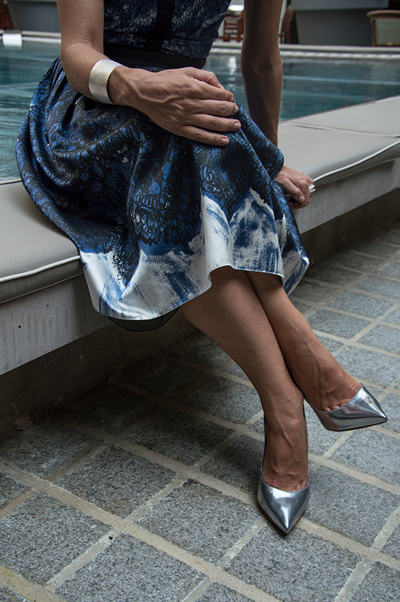

In fashion photography, I like to frame some focus on details. I always analyse a look looking for pairing details with accessories or even while playing with light to create the right reflection. I used to make some streetstyle photoshoots and while editing pictures of the day, i was discovering details I didn't saw when I was shooting. I realized in fashion, people like to play with details (like a pair of socks the same color than a belt or a bag), but those details are mostly ignored or missed. My purpose is to make those pieces of effort shine and be noticed.
Sometimes, those details appear with the environment. It can be the back of a chair being same color than a purse or the pattern of a tiling using the same design than a scarf. But it can also be a task for the photographer to find a way to compile and combine a style with a place using lights or different point of view.

The critical part of a fashion picture is also the attitude of the model, the way he or she moves. A good outfit will be totally unoticied if the person wearing it doesn't "interact" with the clothe, bringing some life to it. It is also my work to capture this good gesture that will boost a style.